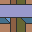

Tileset ArtArtwork created by a matrix of matching tiles. Comprises the image used on each tile and the algorithm that determines the placement of tiles. Tiles are usually square, but can also be triangular or hexagonal. Sometimes, tiles can be rotated, but not flipped as they are only printed or glazed on one side. Square Stagecast tilesets cannot be rotated or flipped.
Warren Street tube station has a good example of tileset artwork. The mosaic was created in 1967 by Alan Fletcher, who chose a maze design for passengers to while away the time until the next train. The same maze design is repeated around the station, so the tiles are not used to create different maze layouts. It is only an image made up of geometrical tiles. See Warren Street sim. If all tiles can be matched with each other then the tiles can simply be placed randomly. The placement algorithm can prevent clumping of similar tiles, which makes the pattern look more pleasing and random to the human eye. Commercial software is available to create random distribution layouts for kitchen floors and wall tiles. A minimum of six different tiles is usually needed. Other tilesets have more limited matching. The simplest has two different edges, which can switch appearance randomly until all sides match. These kind of geometric tiles are called Truchet tiles. Truchet Tiles sim shows patterns formed by geometric Truchet type tiles. Slightly more complex tileset has 4 tiles. The tileset below has two types of edge, 'track' and 'no track'. This gives 2^4 or 16 combinations. Each tile can only match with half of the other tiles, so a sub-set of 8 possible tiles for each edge. The algorithm must correctly match each tile with 4 adjacent neighbors. A good way of producing a pleasing random layout is to create a maze or labyrinth of tracks. A simple maze algorithm also ensures all tracks are connected. So a character placed on the tiles can wander randomly and reach all areas. Another possible method of construction is to place a chequer pattern of random tiles and then 'fill in the gaps' with a tile correctly matching on all 4 sides. Not all tracks will connect. The most common usage for tile art is in computer games. A grid of matching tiles provides an efficient method for generating play areas. The players possible actions are determined by which tile his character is currently standing on.
|
cr31 |